r = 1/√3 = .5773+
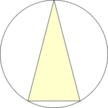
r = 4/√15 = 1.0327+
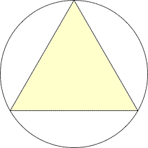
r = 2/√3 = 1.1547+
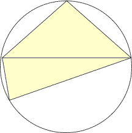
r = 1.5302+
| 3 r = 1/√3 = .5773+ | 5 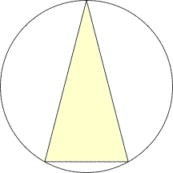 r = 4/√15 = 1.0327+ | 6 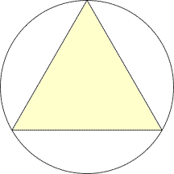 r = 2/√3 = 1.1547+ | 7 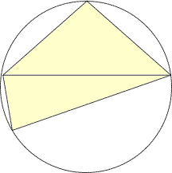 r = 1.5302+ |
| 8 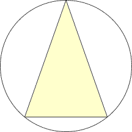 r = 9/4√2 = 1.5909+ | 9 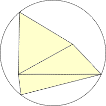 r = 2.5468+ | 10 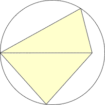 r = 12√(251-3√3)/37√5 = 2.2739+ | 11 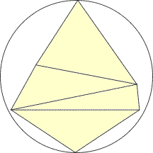 r = 2.9634+ |
| 12 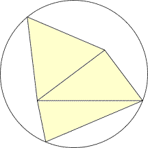 r = 3.4968+ | 13 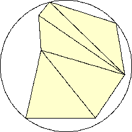 r = 3.7801+ (Jon Palin) | 14 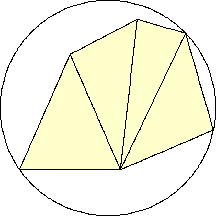 r = 4.2752+ (Jon Palin) | 15 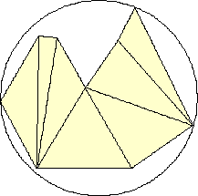 r = 5.1607+ (Maurizio Morandi) |
| 16 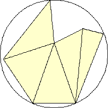 r = 5.0334+ (Maurizio Morandi) | 17 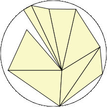 r = 5.9147+ (Joe DeVincentis) | 18 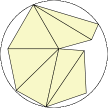 r = 6.2967+ (Joe DeVincentis) | 19 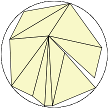 r = 6.8379+ (Joe DeVincentis) |
| 20 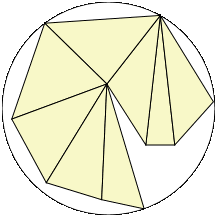 r = 7.3534+ (Joe DeVincentis) | 21 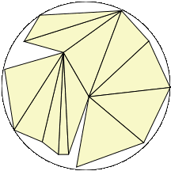 r = 8.2535+ (Joe DeVincentis) | 22 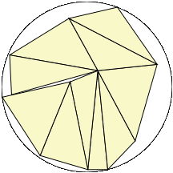 r = 8.5766+ (Joe DeVincentis) | 23 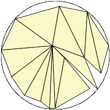 r = 9.5137+ (Joe DeVincentis) |
| 24 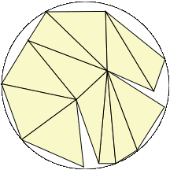 r = 9.8888+ (Joe DeVincentis) | 25 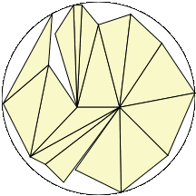 r = 11.3464+ (Joe DeVincentis) | 26 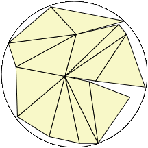 r = 11.7197+ (Joe DeVincentis) | 27 r = 13.2703+ (Joe DeVincentis) |
| 28 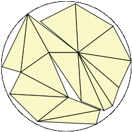 r = 13.3210+ (Joe DeVincentis) | 29 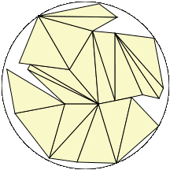 r = 14.8887+ (Joe DeVincentis) | 30 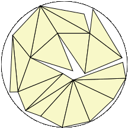 r = 15.5952+ (Joe DeVincentis) |
| 3 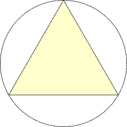 r = 1/√3 = .5773+ | 5 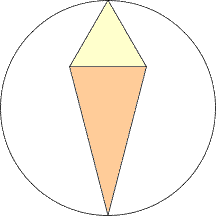 r = (√15+√3)/4 = 1.4012+ | 6 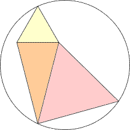 r = 2√(52+9√5)/11 = 1.5441+ | 7 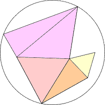 r = 1.9816+ |
| 8 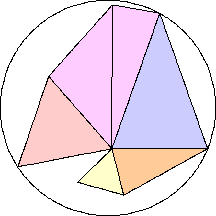 r = 2.2516+ (Jon Palin) | 9 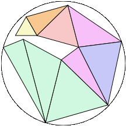 r = 2.8745+ (Joe DeVincentis) | 10 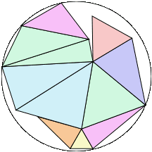 r = 3.2920+ (Joe DeVincentis) | 11 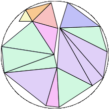 r = 4.0568+ (Joe DeVincentis) |
| 12 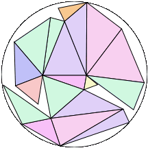 r = 5.0037+ (Joe DeVincentis) | 13 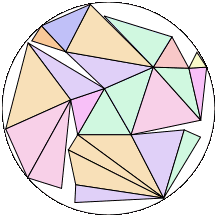 r = 5.9851+ (Joe DeVincentis) | 14 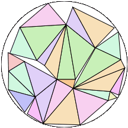 r = 6.7984+ (Joe DeVincentis) | 15 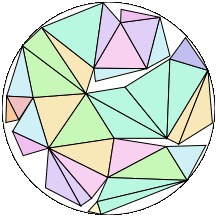 r = 8.0494+ (Joe DeVincentis) |
If you can extend any of these results, please e-mail me. Click here to go back to Math Magic. Last updated 2/13/13.